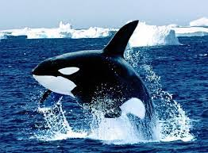
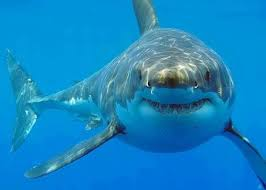

| Suda yasayan hayvanlar, genellikle baliklar ve bocek turleridir. Bazi baliklar tatli suda yasam surdururken, bazilar ise tuzlu suda yasamlarini devam ettirebilmektedirler. Bunun yani sira bazi yengec ve kaplumbaga turleri de suda yasam surdurmektedirler. Suda yasayan hayvanlar içerisinde avlanmak amaciyla denizi kullanan bazi kuslar da yer almaktadir. Her ne kadar suda yasayan baska canlilar da bulunsa suyun buyuk kismini baliklar kullanmaktadir. Ayrica bazi memeli hayvanlar da suda yasam surdururler. Fok ve balina bu hayvanlarin basinda yer almaktadir.Suda yasayan hayvanlar sunlardir;
Baliklar
Yengecler,Ahtapotlar,Karides,Algler,Su bitkileri,Denizanalari,Su kaplumbagası,Kurbaga,Su yilani,Timsah,Kaz,Ordek,Marti,Pelikan,Karabatak,Penguen,Su sürüngenleri hayvanlar icerisinde en ilginc olani hayalet baliklardir.Suda Yaşayan Hayvanlarin ozellikleri
Baliklar deniz, akarsu ve gollerde yasayan canli turleridir. Balina, yunus ve kopek baliklari da suda yasam surmektedir. Bazi baliklar dusmanlarindan kendilerini korumak icin cok ustun bir kamufulaj yetenegi sergilemektedirler. Bu baliklarin basinda ise kaya baliklari gelmektedir. Bazi suda yasayan hayvanlar ise renk degistirebilme özelligine sahiptirler. Fiddler bu canlılara verebilecegimiz en iyi ornektir. Fiddler yengeci camur oyuntusu icerisinde yasam sürmekte ve gunluk olarak renk degistirme ozelligine sahip olarak bilinmektedir. Bazi suda yasayan canli turleri ise bulunduklari ortama ve bulunduklari yere uygun olarak renk degistirme ozelliklerini kullanabilmektedir. Bunun yani sira bazi böceklerde yaz aylarinin sona ermesiyle birlikte renk degistirme ozelligine sahiptir.
|